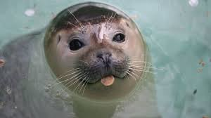

Foca Monje
 La foca monje (Monachus monachus), una especie en peligro de extinción, históricamente habitó las costas del Mediterráneo y el Atlántico norteafricano, incluyendo las islas de Cabo Verde, Madeira y las Canarias, y la península ibérica. El Debate describe a la foca monje como una de las especies más raras que existen.
Amenazas
Las poblaciones de foca monje del Atlántico Oriental sufren por el atrapamiento y muerte en redes de pesca, sobrepesca, caza, contaminación y factores naturales como el fitoplancton tóxico.